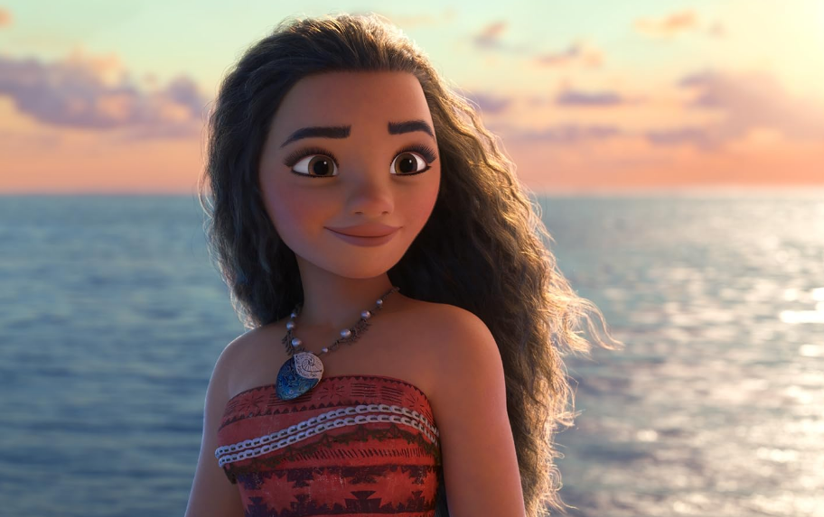

Oie! Me chamo Manuella Silva da Costa, tenho 16 anos e nasci em Porto Alegre/RS. Eu moro em Canoas desde pequena, com meus pais e meu irmão mais novo. Desde 2023, eu comecei a gostar de praticar vôlei, que foi quando comecei a conviver mais com o esporte. Támbem adoro games de FPS e terror, principalmente quando estou com os meus amigos.
Com seis anos entrei na escola Tancredo Neves, ali eu estudei até chegar na oitava série, que foi quando mudei para a Rondônia e finalizei o ensino fundamental lá. Em 2024 fiz a prova para entrar no Instituto Federal de Canoas e passei, então agora estou cursando Desenvolvimento de Sistemas. Até agora estou gostando do curso, e creio que estes quatro anos vão ser de muito aprendizado e diversão.

Foto Ilustrativa